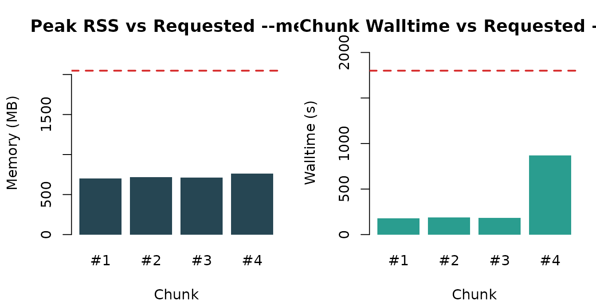

Multi-Stage HPC Pipelines, Efficiency Auditing & Container Handoff
Source:vignettes/pipelines-and-efficiency.Rmd
pipelines-and-efficiency.RmdOverview
Production computational statistics workflows rarely stop at a single
isolated array job. Researchers commonly run multi-stage
dependent pipelines (for example, simulate across parallel
array chunks, branch into independent summary or diagnostic stages, and
fan-in into a final synthesis table), audit cluster efficiency
post-mortem to tighten future SLURM requests, and attach reproducible
Apptainer containers produced by external tools such as
rcapsule.
This vignette demonstrates all three workflows introduced in
slurmpilot 0.4.0.
1. Multi-Stage Dependent Job DAGs
(slurm_pipeline())
slurm_stage() and slurm_pipeline() assemble
dependent array stages into a directed acyclic graph (DAG),
automatically validating unique names, upstream references, and
acyclicity via Kahn’s topological sort.
Below we construct a four-stage diamond DAG: -
simulate (root): runs 8 parallel Monte Carlo estimation
tasks. - power_summary (branch A): dynamically consumes
simulate outputs via args_from_upstream to
compute chunk-level rejection indicators. - bias_summary
(branch B): computes bias summaries across the simulated estimates using
.upstream$simulate. - synthesize (fan-in
sink): waits for BOTH power_summary and
bias_summary (afterok) and combines them into
a final summary record.
library(slurmpilot)
s_sim <- slurm_stage(
name = "simulate",
fun = function(cfg) {
x <- stats::rnorm(cfg$n, mean = cfg$delta, sd = 1)
tt <- stats::t.test(x, mu = 0)
data.frame(
task_id = cfg$task_id,
est = mean(x),
reject = tt$p.value < 0.05
)
},
args_list = lapply(seq_len(8L), function(i) list(task_id = i, n = 40L, delta = 0.4)),
resources = resource_spec(n_tasks = 8L, chunk_size = 4L, mem_mb = 512L, time_minutes = 5),
seed = 2026L
)
s_power <- slurm_stage(
name = "power_summary",
fun = function(row_df) mean(row_df$reject),
args_from_upstream = function(up) split(up$simulate, up$simulate$task_id <= 4L),
depends_on = "simulate"
)
s_bias <- slurm_stage(
name = "bias_summary",
fun = function(target_delta) mean(.upstream$simulate$est) - target_delta,
args_list = list(0.4),
depends_on = "simulate"
)
s_final <- slurm_stage(
name = "synthesize",
fun = function(up) {
data.frame(
empirical_power = mean(up$power_summary),
mean_bias = mean(up$bias_summary)
)
},
depends_on = c("power_summary", "bias_summary")
)
pipe <- slurm_pipeline(s_sim, s_power, s_bias, s_final, name = "mc_diamond")
print(pipe)
#>
#> ── slurmpilot Pipeline DAG: mc_diamond
#> • Stages: 4 | Edges: 4 | Roots: simulate | Sinks: synthesize
#> • Topological order: simulate -> power_summary -> bias_summary -> synthesizeExecute the entire diamond DAG locally on
MockSlurmBackend (capped at 2 workers) and inspect live
stage status and final collected results:
tmp_dag <- tempfile("sp_dag_")
be_local <- mock_slurm_backend(root_dir = tmp_dag, max_workers = 2L)
run <- slurm_pipeline_run(pipe, be_local, wait = TRUE, poll_interval = 0.05)
print(slurm_pipeline_status(run))
#>
#> ── slurmpilot Pipeline Status: mc_diamond [COMPLETED]
#> • Stages completed: 4/4 (running=0, pending=0, failed=0, skipped=0)
slurm_pipeline_status(run)$stages[, c("stage", "level", "state", "n_chunks")]
#> # A tibble: 4 × 4
#> stage level state n_chunks
#> <chr> <int> <chr> <int>
#> 1 simulate 1 COMPLETED 2
#> 2 power_summary 2 COMPLETED 1
#> 3 bias_summary 2 COMPLETED 1
#> 4 synthesize 3 COMPLETED 1
slurm_pipeline_collect(run, simplify = TRUE)
#> # A tibble: 1 × 2
#> empirical_power mean_bias
#> <dbl> <dbl>
#> 1 0.75 0.0204Queued Cluster-Side SLURM --dependency=afterok:...
Submission
On SlurmSshBackend with wait = FALSE,
slurm_pipeline_run() submits static stages in topological
order and emits genuine #SBATCH --dependency=afterok:...
directives so SLURM schedules downstream stages automatically on the
cluster:
tmp_ssh <- tempfile("sp_ssh_dag_")
job_counter <- 7000L
mock_ssh_runner <- function(cmd, args) {
if (cmd == "ssh" && grepl("^sbatch ", args[[length(args)]])) {
job_counter <<- job_counter + 1L
return(list(status = 0L, stdout = paste0(job_counter, "\n"), stderr = ""))
}
list(status = 0L, stdout = "", stderr = "")
}
ssh_be <- slurm_ssh_backend(
host = "hpc.example.edu",
user = "researcher",
remote_dir = "/scratch/researcher/dag_demo",
local_stage_dir = tmp_ssh,
command_runner = mock_ssh_runner
)
queued_pipe <- slurm_pipeline(
slurm_stage("fit_a", fun = function(x) x, args_list = list(1, 2)),
slurm_stage("fit_b", fun = function(x) x, args_list = list(3, 4)),
slurm_stage("merge", fun = function(x) x, args_list = list(1), depends_on = c("fit_a", "fit_b")),
name = "cluster_dag"
)
ssh_run <- slurm_pipeline_run(queued_pipe, ssh_be, wait = FALSE)
ssh_run$dependencies_submitted
#> fit_a fit_b merge
#> NA NA "afterok:7001:7002"
grep("^#SBATCH --dependency=", readLines(file.path(ssh_run$jobs$merge$local_dir, "submit.sbatch")), value = TRUE)
#> [1] "#SBATCH --dependency=afterok:7001:7002"2. Post-Mortem Resource Efficiency Auditing
(slurm_efficiency_report())
After a job finishes, slurm_efficiency_report() compares
requested --mem and --time against empirical
Peak RSS and walltime from MockSlurmBackend or parsed
sacct output. It quantifies memory waste %, walltime slack
%, and straggler imbalance, and emits a tightened
recommended_resources spec for your next run:
# Example 1: Over-provisioned job on MockSlurmBackend
eff_over <- slurm_efficiency_report(run$jobs$simulate)
print(eff_over)
#>
#> ── slurmpilot Post-Mortem Efficiency Audit: mc_diamond_simulate [over_provisioned]
#> • Memory: 73.6 MB max / 512 MB req (14.4% util, 85.6% waste)
#> • Walltime: 0.1s max / 300s req (0.0% util, 100.0% slack)
#> • Load balance: straggler ratio 1.16x across 2 chunks
#> • Recommended next flags: --array=1-2 --cpus-per-task=1 --mem=256M
#> --time=00:05:00
#> ℹ Memory waste is 85.6% (peak 73.6 MB vs 512M requested); tighten --mem to
#> 256M.
# Example 2: Imbalanced HPC sacct run with a straggler chunk
sacct_imbalanced <- parse_sacct_output(paste(
"8100_1|COMPLETED|00:03:00|700M|0:0",
"8100_2|COMPLETED|00:03:10|720M|0:0",
"8100_3|COMPLETED|00:03:05|710M|0:0",
"8100_4|COMPLETED|00:14:30|760M|0:0",
sep = "\n"
))
eff_sacct <- slurm_efficiency_report(
sacct_imbalanced,
resources = resource_spec(n_tasks = 16L, chunk_size = 4L, mem_mb = 2048L, time_minutes = 30)
)
print(eff_sacct)
#>
#> ── slurmpilot Post-Mortem Efficiency Audit: sacct_job [imbalanced]
#> • Memory: 760.0 MB max / 2048 MB req (37.1% util, 62.9% waste)
#> • Walltime: 870.0s max / 1800s req (48.3% util, 51.7% slack)
#> • Load balance: straggler ratio 4.64x across 4 chunks
#> • Recommended next flags: --array=1-4 --cpus-per-task=1 --mem=1G
#> --time=00:20:00
#> ℹ Memory waste is 62.9% (peak 760.0 MB vs 2G requested); tighten --mem to 1G.
#> ℹ High straggler ratio (4.64x max/median chunk time); switch to strategy =
#> 'lpt' in estimate_resources()/plan_chunks() to balance chunk loads.
plot(eff_sacct, engine = "base")
3. Zero-Dependency Container Handoff
(use_rcapsule_container())
use_rcapsule_container() validates container paths and
bind mounts safely and attaches Apptainer .sif /
.def recipes or duck-typed rcapsule manifests
to any slurm_job_spec() without introducing a hard package
dependency:
spec <- slurm_job_spec(
fun = function(x) mean(stats::rnorm(x)),
args_list = as.list(rep(500L, eff_sacct$recommended_resources$n_tasks)),
resources = eff_sacct$recommended_resources,
name = "containerized_run"
)
# Duck-typed rcapsule container manifest
capsule_manifest <- structure(
list(
targets = list(
apptainer = list(
sif_path = "/scratch/containers/project_env.sif",
def_path = "/scratch/containers/project_env.def",
binds = c("/scratch/data:/data:ro")
)
),
manifest = list(
content_digest = "sha256:9f86d081884c7d65",
r_version = "4.4.1"
)
),
class = "rcapsule"
)
spec_attached <- use_rcapsule_container(spec, capsule_manifest, binds = c("/scratch/out:/out:rw"))
print(spec_attached$container_meta)
#>
#> ── slurmpilot Container Specification (rcapsule)
#> • Image (.sif): /scratch/containers/project_env.sif
#> • Recipe (.def): /scratch/containers/project_env.def
#> • Binds: /scratch/data:/data:ro, /scratch/out:/out:rw
#> • Provenance digest: sha256:9f86d081884c7d65 | R version: 4.4.1
# Verify generated sbatch includes container execution, binds, and provenance digest
sb <- render_sbatch_script(
job_name = spec_attached$name,
resources = spec_attached$resources,
work_dir = "/scratch/researcher/containerized_run",
container_sif = spec_attached$container_sif,
container_binds = spec_attached$container_binds,
env_vars = spec_attached$env_vars
)
cat(paste(tail(sb$script, 8L), collapse = "\n"), "\n")
#> export APPTAINERENV_MKL_NUM_THREADS=1
#> export APPTAINERENV_SLURMPILOT_WORK_DIR="${WORK_DIR}"
#> export APPTAINERENV_SLURMPILOT_CHUNK_ID="${SLURM_ARRAY_TASK_ID}"
#> export APPTAINERENV_SLURMPILOT_ATTEMPT=1
#> export APPTAINERENV_SLURMPILOT_CONTAINER_DIGEST='sha256:9f86d081884c7d65'
#>
#> echo "[slurmpilot] Starting job ${SLURM_JOB_ID:-local} array task ${SLURM_ARRAY_TASK_ID} on $(hostname)"
#> apptainer exec --cleanenv --bind '/scratch/researcher/containerized_run:/scratch/researcher/containerized_run' --bind '/scratch/data:/data:ro' --bind '/scratch/out:/out:rw' '/scratch/containers/project_env.sif' Rscript "${WORK_DIR}/worker.R" --work-dir "${WORK_DIR}" --chunk-id "${SLURM_ARRAY_TASK_ID}" --attempt "1"
unlink(c(tmp_dag, tmp_ssh), recursive = TRUE)